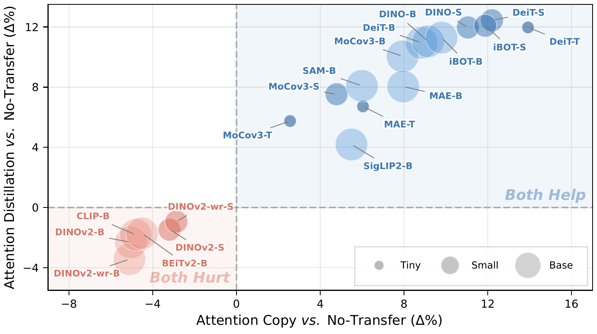
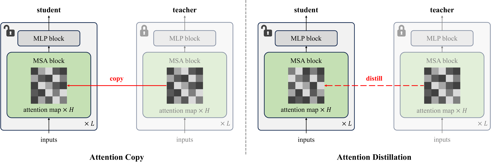
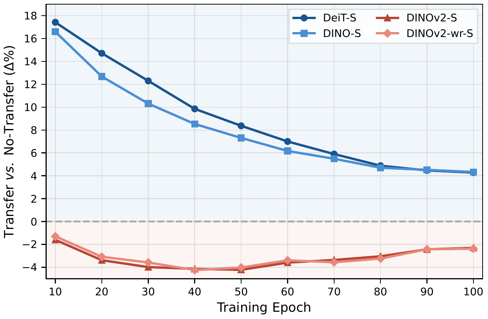
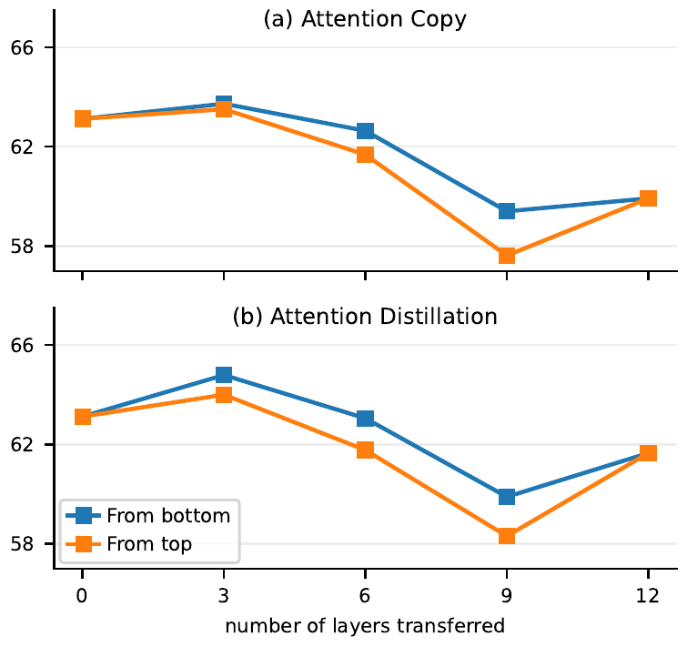
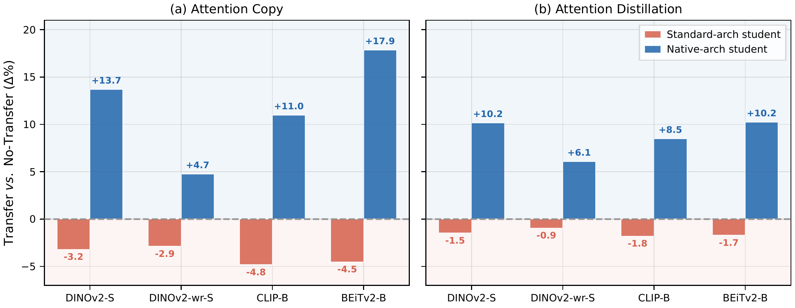
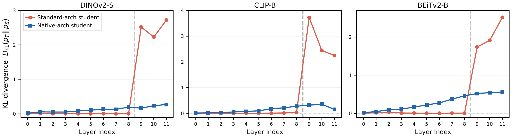
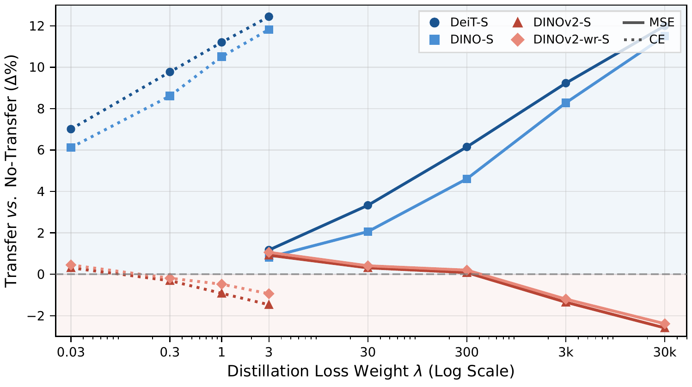

A recent work shows that Attention Transfer, which transfers only the attention patterns from a pre-trained teacher Vision Transformer (ViT) to a randomly initialized standard student ViT, is sufficient to recover the full benefit of the teacher's pre-trained weights. We revisit this finding on a comprehensive benchmark of 20 teachers from 11 well-known ViT families and reveal that Attention Transfer is not universally effective. While 7 families transfer successfully, 4 consistently fail, falling up to 5.1% below the from-scratch no-transfer baseline. Further results demonstrate that this failure is family-consistent across model sizes, and persists under extended training durations, different transfer datasets, and out-of-distribution evaluations. Controlled analyses then consistently localize the problem to the attention-routing channel, indicating that the key issue is not whether the student can match the teacher's attention patterns, but whether the matched patterns remain functional for the student. Crucially, we identify architectural mismatch between the pre-trained teacher and the standard student as the primary mechanism. By adding only the teacher's native architectural components to the student in a randomly initialized state, we completely reverse the failure for all 4 families. Notably, these components alone do not improve from-scratch training, confirming that they specifically unlock the usability of the teacher's attention. We further show that this failure is not explained by the inadequate choice of transfer loss, differences in pre-training recipes, or the intrinsic quality of attention maps. Our findings refine the prevailing understanding of attention in ViT representations: attention is sufficient only when the student architecture matches the teacher.
Following Li et al. (2024), we study Attention Transfer, where a randomly initialized student Vision Transformer (ViT) is trained to inherit the full benefit of a pre-trained teacher without loading the teacher’s full pre-trained weights. We study two forms of Attention Transfer from a pre-trained teacher ViT to a standard student of the same size: Attention Copy, which directly copies the teacher’s attention projection weights and keeps them frozen; and Attention Distillation, which trains the student to match the teacher’s attention patterns through an auxiliary transfer objective.

Model Zoo. We revisit Attention Transfer on a comprehensive model zoo which consists of 20 pre-trained weights from 11 well-known ViT families, including DeiT, DINO, MoCov3, MAE, iBOT, SigLIP2, SAM, DINOv2, DINOv2-wr, CLIP, and BEiTv2, spanning three model sizes: Tiny, Small, and Base. All Attention Transfer experiments are conducted on ImageNet-1K classification with the default protocol in Li et al. (2024) using the standard teacher-student architecture. All reported results are averaged over 3 random seeds.
No-Transfer Baseline. As a primary reference, we define the No-Transfer (NoT) baseline, where the same standard ViT is randomly initialized and trained from scratch for 20 epochs. Attention Transfer from one given pre-trained weights is considered a “failure” when the final accuracy falls below this baseline, indicating that imposing attention patterns from the teacher is less effective than learning from scratch under the same student architecture.
The results reveal a clear family-dependent split, and this split boundary is consistent across model sizes rather than driven by isolated pre-trained weights. Specifically, 7 families, including DeiT, DINO, MoCov3, MAE, iBOT, SigLIP2, and SAM, improve over the No-Transfer baseline, with gains reaching 13.9% for DeiT-T under Attention Copy. In contrast, 4 families: DINOv2, DINOv2-wr, CLIP, and BEiTv2, consistently fall into the failure region. The worst case is DINOv2-wr-B, which underperforms the No-Transfer baseline by 5.1% under Attention Copy. Notably, all teachers evaluated in Li et al. (2024) belong exclusively to our success group, while the failure families are absent from their evaluations.

Extended Training Robustness. A natural counter-hypothesis is that the failure families might suffer from slower convergence under the transferred attention patterns. We extend the training schedule from 20 to 100 epochs for both the success and failure families. The performance gap persists throughout the entire extended learning process. While successful families maintain strong positive gains over the No-Transfer baseline, the failure families remain consistently negative even with substantially longer training.
| NoT | DeiT | DINO | DINOv2 | DINOv2-wr | |
|---|---|---|---|---|---|
| IN-1K | 63.1 | 75.6 +12.4 | 75.1 +12.0 | 61.7 −1.5 | 62.2 −0.9 |
| iNat 2017 | 26.6 | 44.7 +18.1 | 46.0 +19.4 | 24.4 −2.2 | 24.5 −2.1 |
| iNat 2018 | 35.0 | 50.2 +15.2 | 51.2 +16.3 | 33.1 −1.9 | 33.8 −1.2 |
| iNat 2019 | 40.1 | 56.8 +16.7 | 55.7 +15.5 | 38.1 −2.1 | 38.7 −1.4 |
Dataset Robustness. We then test whether the observed failure is merely an artifact of the ImageNet-1K transfer dataset. Table 1 reports the performance of Attention Distillation on three fine-grained iNaturalist variants under the standard 20-epoch protocol. The same success/failure split appears consistently across all three year splits, matching the ImageNet-1K results.
| NoT | DeiT | DINO | DINOv2 | DINOv2-wr | |
|---|---|---|---|---|---|
| IN-A | 9.2 | 17.6 +8.4 | 17.2 +8.0 | 6.0 −3.2 | 5.8 −3.4 |
| IN-R | 35.9 | 42.3 +6.4 | 42.8 +6.9 | 32.8 −3.1 | 32.2 −3.7 |
| IN-S | 22.1 | 29.7 +7.6 | 29.4 +7.3 | 19.5 −2.6 | 19.0 −3.1 |
| IN-V2 | 63.9 | 69.5 +5.5 | 69.9 +6.0 | 61.4 −2.5 | 61.6 −2.4 |
Out-of-Distribution Robustness. This observed success/failure split also persists under the out-of-distribution evaluation. Table 2 shows that on four ImageNet-1K distribution-shift benchmarks, Attention Distillation preserves the same positive/negative pattern observed in the in-distribution settings.
Having established the robust failure of Attention Transfer for specific teacher families, we now investigate exactly where the transferred pre-trained weights harm the student. We diagnose this problem systematically through the three-level analysis below.
| Attn. | MLP | DeiT-S | DINOv2-S | CLIP-B |
|---|---|---|---|---|
| 66.0 | 65.3 | 70.3 | ||
| ✓ | 71.7 +5.7 | 63.7 −1.6 | 69.4 −0.9 | |
| ✓ | 77.7 +11.7 | 69.2 +3.9 | 74.7 +4.4 | |
| ✓ | ✓ | 79.3 +13.3 | 71.0 +5.7 | 80.1 +9.8 |
Component-Level Decomposition. We selectively initialize the attention and MLP blocks from representative teachers under a component-level decomposition setup with full fine-tuning. As shown in Table 3, MLP-only initialization is consistently beneficial for both the success teacher (DeiT-S) and the failure teachers (DINOv2-S and CLIP-B). In contrast, Attention-only initialization preserves the success/failure split. This shows that the failure families do not suffer from a generic inability to benefit from the pre-trained weights as a whole. Instead, the failure is consistently localized to the attention pathway.

Layer-wise Decomposition. We transfer attention from the top or bottom k layers of one representative failure teacher, DINOv2-S, under both Attention Copy and Attention Distillation. No layer subset recovers the positive gains observed for success families. Instead, performance remains below the No-Transfer baseline across all tested transfer depths. This rules out a single problematic depth as the source of failure and suggests that the failure is distributed broadly across the transferred attention patterns.
| DeiT-S (NoT: 63.1) | DINOv2-S (NoT: 63.1) | |||
|---|---|---|---|---|
| Copy | Distill | Copy | Distill | |
| Q | 78.1 +15.0 | 77.0 +13.9 | 57.9 −5.2 | 59.0 −4.1 |
| K | 78.7 +15.6 | 76.7 +13.6 | 57.4 −5.7 | 58.7 −4.4 |
| V | 78.4 +15.3 | 78.0 +14.9 | 47.3 −15.9 | 54.9 −8.3 |
| Attn. | 75.3 +12.2 | 75.6 +12.4 | 59.9 −3.2 | 61.7 −1.5 |
QKV Decomposition. Across both Attention Copy and Attention Distillation, Table 4 shows that transferring any of Q, K, or V alone remains beneficial for the success teacher DeiT-S. However, the same single-component transfer is harmful for the failure teacher DINOv2-S, with V producing the largest drop. Together with the previous layer-wise analysis, this further confirms that the failure is not confined to one specific layer or one isolated attention subcomponent, but is distributed broadly throughout the overall attention pathway.
Motivation. This leads us to hypothesize that the missing factor is architectural compatibility in the default protocol: transferred attention remains usable only when the student preserves the architectural components under which the teacher originally learned its attention patterns. Concretely, each failure family contains one or more such components that are absent from the standard student architecture: LayerScale in DINOv2 and DINOv2-wr, PreLayerNorm in CLIP, and LayerScale together with RelativePositionBias in BEiTv2. These native components define the scaling, normalization, and positional context under which the teacher’s attention was learned.
Native-architecture Rescue. We augment the student architecture by adding only the teacher-native missing components. The inserted components are initialized randomly and trained jointly with the student, with no pre-trained weights loaded.

| DINOv2-S | CLIP-B | BEiTv2-B | |
|---|---|---|---|
| Standard-arch | 63.1 | 69.0 | 69.0 |
| Native-arch | 60.1 −3.0 | 66.7 −2.3 | 66.3 −2.7 |
Results & Analysis. Figure 4 demonstrates a clear and consistent performance flip for both Attention Transfer methods across the 4 failure families: transfer is harmful with the standard student architecture, while beneficial once teacher-native components are added. One natural concern is that these gains could come from the added components’ own capacity, rather than from restored compatibility with the teacher’s attention patterns. As shown in Table 5, native-arch NoT baselines yield worse performance than standard-arch ones for all failure families, indicating that the added components do not by themselves improve performance. The rescue effect therefore comes specifically from restoring architectural compatibility and unlocking effective Attention Transfer.
Why Architectural Mismatch Causes Failure. To explain why this rescue is effective, we further test the architectural compatibility hypothesis directly at the attention level. We measure this via per-layer KL divergence between the transferred student’s attention and the teacher’s native attention, for both standard-arch and native-arch students under Attention Distillation. The standard-arch student matches the early layers almost perfectly with near-zero KL across all three failure families, but exhibits a sharp divergence spike in the last three layers. By contrast, the native-architecture student remains consistently low and smooth across all layers, without any collapse for transferring attention.

We now ask whether simpler explanations could account for the observed failure. We therefore investigate three natural alternative explanations below.

Not the Transfer Loss. MSE exhibits the same family-level trends as CE when the two losses’ magnitudes are matched by adjusting λ. For success teachers (DeiT-S, DINO-S), both losses produce monotonic improvements as λ increases. For failure teachers (DINOv2-S, DINOv2-wr-S), both losses instead produce monotonic degradation as λ increases. These results rule out the inadequate choice of transfer loss as the primary explanation for the observed failure.
Not the Pre-training Recipe. As shown in Table 6, for each candidate explanation from the failure families, we can identify at least one counter-example with that property from the success families, or one teacher that lacks it but still fails. Overall, none of these single-factor recipe properties predicts the observed family-level failure boundary. This rules out pre-training recipe differences as the primary explanation.
| Hypothesis | Failure | Counter-example |
|---|---|---|
| Pre-training signal | DINOv2 (Self-Distillation) | DINO (Self-Distillation) |
| CLIP (Contrastive) | SigLIP2 (Contrastive) | |
| BEiTv2 (Masked Image Modeling) | iBOT/MAE (Masked Image Modeling) | |
| Data source | DINOv2 (Non-ImageNet Data) | SAM (Non-ImageNet Data) |
| CLIP (Multi-Modal Data) | SigLIP2 (Multi-Modal Data) | |
| Special attribute | DINOv2 (with Attention Sink) | DeiT (with Attention Sink) |
| DINOv2 (patch 14→16 to fit standard-arch) | CLIP (native patch 16, also fails) |
| DINO-B | DINOv2-B | CLIP-B | DeiT-B | |
|---|---|---|---|---|
| MaxBoxAccV2 | 79.9 | 69.8 | 68.9 | 51.6 |
Not the Attention Map Quality. We measure the quality of attention maps with the object localization protocol of SimPool: MaxBoxAccV2 on 2,000 ImageNet-1K validation images with ground-truth boxes. As shown in Table 7, the success teacher DINO-B scores higher than both failure teachers, while the other success teacher DeiT-B scores below them: the quality ranking is interleaved with the success/failure split. The intrinsic quality of the teacher’s attention maps therefore does not predict the family-dependent failure.
| DINOv2-S | CLIP-B | BEiTv2-B | |
|---|---|---|---|
| w/o rescue | 76.1 | 72.0 | 68.2 |
| w/ rescue | 83.7 +7.6 | 67.9 −4.1 | 51.6 −16.6 |
Furthermore, the proposed native-arch rescue does not work through attention map quality. As shown in Table 8, the rescue has no consistent effect direction on the attention map quality: it raises the measured quality under DINOv2-S but lowers it for CLIP-B and BEiTv2-B. In contrast, this rescue can reverse the transfer failure for all three weights.
@inproceedings{qin2026attention,
title = {Attention Transfer Is Not Universally Effective for Vision Transformers},
author = {Qin, Huaiyuan and Yang, Muli and Goenawan, Gabriel James and
Hu, Peng and Gong, Chen and Peng, Xi and Zhu, Hongyuan},
booktitle = {Advances in Neural Information Processing Systems (NeurIPS)},
year = {2026}
}This research is supported by the NSF of China (Grant No. 62336003, 12371510) and the Shanghai Municipal Special Program for Basic Research on General AI Foundation Models (Grant No. 2025SHZDZX025G12), and is conducted in collaboration with ST Engineering Geo-Insights Pte Ltd. We thank the anonymous reviewers and area chairs for their valuable feedback and constructive comments. This page is adapted from the ECHO project page, itself built on the Nerfies template.